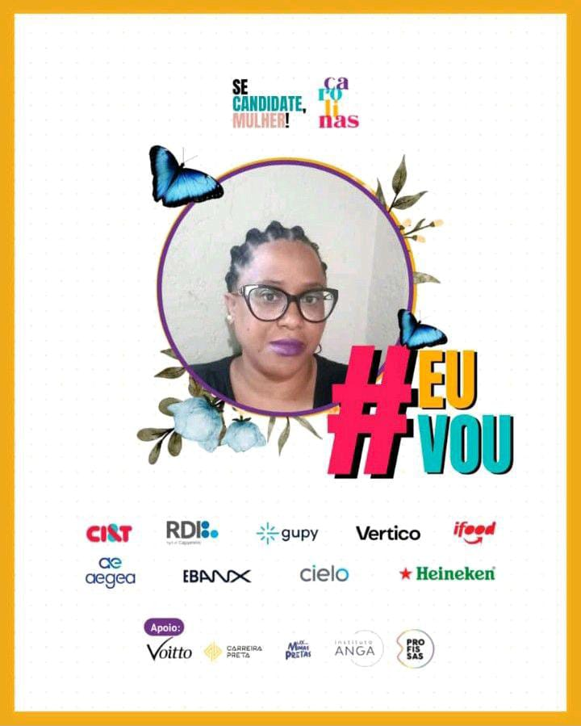

01 de dezembro de 2022
Se Candidate, Mulher! Programa Carolinas

Em dezembro do ano passado fui selecionada para participar do Programa Carolinas da SCM Academy,
que capacita mulheres negras profissionais e estudantes em busca de um novo emprego ou transição de carreira com interesses nas áreas tech e comercial.
Durante 15 dias tivemos aulas maravilhosas para desenvolver as nossas habilidades técnicas e interpessoais em processos seletivos,
mentorias ao vivo, conteúdos sobre currículo, LinkedIn e entrevistas.